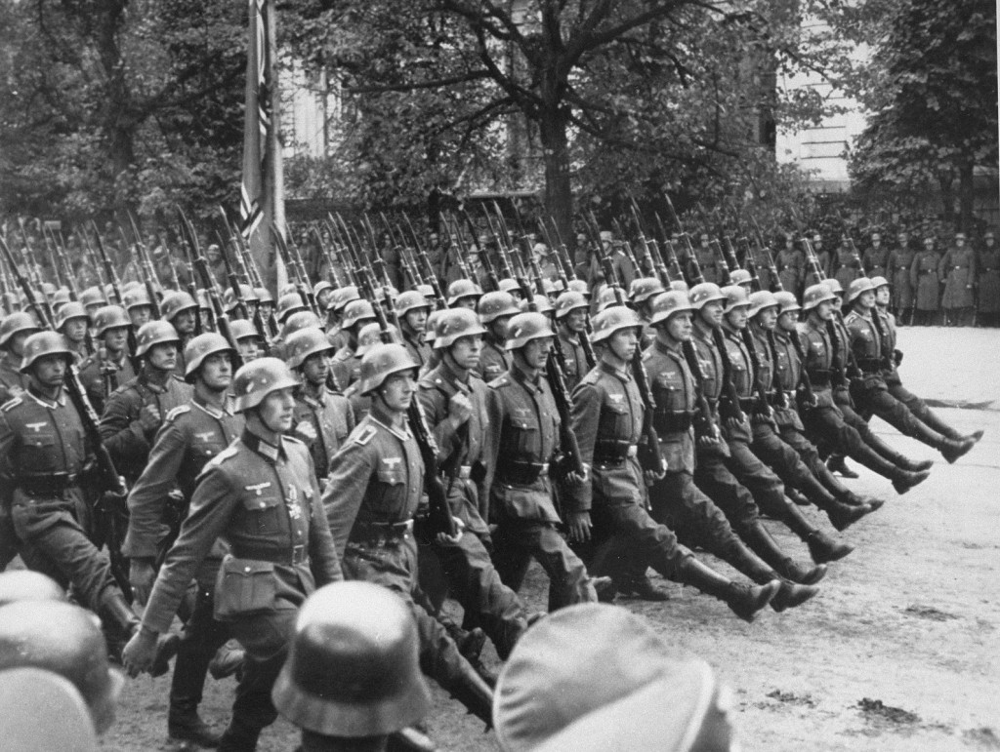
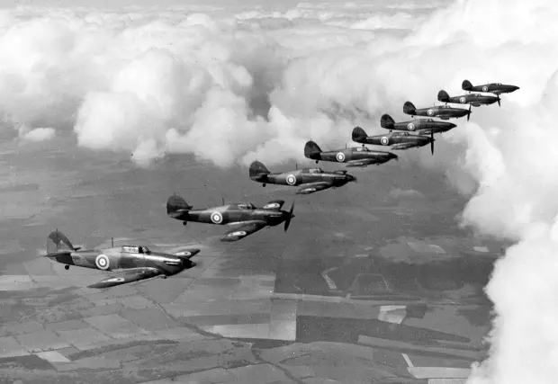
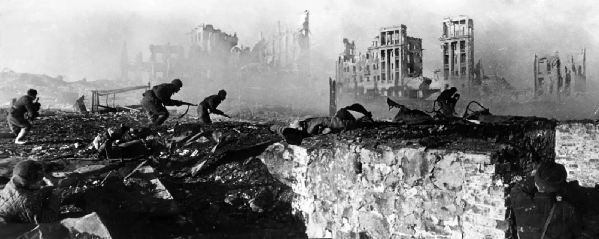
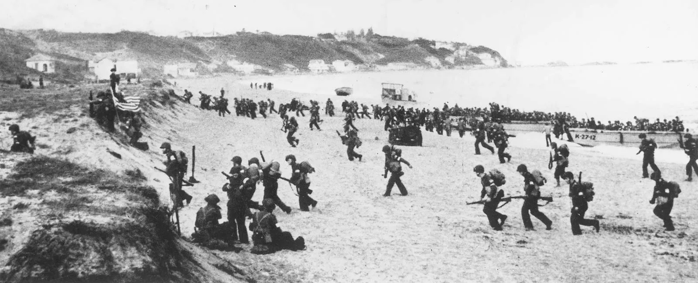
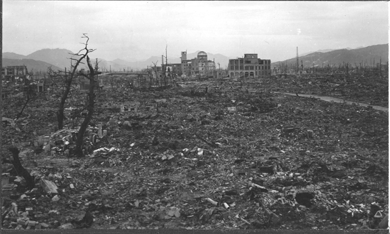
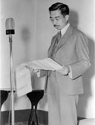
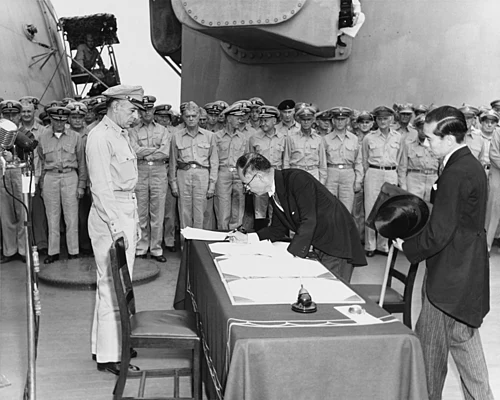

European Theatre
Western & Eastern Fronts
Aug 23, 1939

Non-Aggression Pact (Molotov–Ribbentrop Pact)
Germany and the Soviet Union made a deal agreeing not to go to war with each other. They also secretly split up Eastern Europe between themselves. This basically gave Hitler the green light to invade Poland without having to worry about the Soviets getting involved.
Sept 1, 1939

Poland Invaded
Germany invaded Poland using a strategy called blitzkrieg, which was a fast and aggressive combination of air attacks, tanks, and ground troops all hitting at once. Britain and France had promised to protect Poland, so they declared war on Germany two days later. This is considered the official start of World War II in Europe.
May 26 – June 4, 1940

Dunkirk Evacuation
German forces pushed the Allied army all the way to the beaches of northern France, leaving them completely trapped. Britain put together a huge evacuation using military ships and even regular civilian boats to cross the English Channel and rescue over 330,000 soldiers. It was a close call, but saving those troops kept the Allies in the fight.
July – Oct 1940

Battle of Britain
Germany spent months bombing British cities, airfields, and factories trying to break Britain's will to fight and destroy their air force. British pilots fought back hard and Germany was never able to take control of the skies. Because of this, Hitler eventually gave up on the idea of invading Britain altogether.
June 22, 1941

Soviet Union Invaded (Operation Barbarossa)
Hitler went back on the deal he made with the Soviets and launched a massive surprise invasion of the Soviet Union with millions of troops. It was the largest military invasion in history. Taking on the USSR opened up a whole new front in the east, which ended up spreading Germany way too thin and was one of Hitler's biggest blunders of the war.
Aug 23, 1942

Stalingrad Attacks Ordered
Hitler ordered German forces to take the city of Stalingrad, which was a major industrial hub on the Volga River. Instead of a quick victory, the battle turned into months of brutal house-to-house combat as Soviet troops refused to retreat. It dragged on for nearly six months and caused enormous casualties on both sides.
Nov 8, 1942

Allies Land in North Africa (Operation Torch)
U.S. and British troops joined up and invaded North Africa, landing in Morocco and Algeria to kick Axis forces out of the region. This was actually the first time American soldiers fought in the European Theatre. Controlling North Africa also gave the Allies a better position to attack southern Europe next.
Feb 2, 1943

German Surrender in Stalingrad
After being completely surrounded by Soviet troops for months with no food or supplies, the German 6th Army finally gave up and surrendered at Stalingrad. Around 300,000 German soldiers were killed or captured in the battle. This was a huge turning point because it showed that Germany could be beaten, and from here on Germany was mostly on the defensive.
June 6, 1944

D-Day (Normandy Invasion)
The Allies launched the biggest seaborne invasion ever, sending thousands of troops onto five beaches in Normandy, France all at the same time. Soldiers landed by boat and parachute while German forces fired down on them from above, making it an incredibly dangerous operation. The invasion worked and opened up a whole new front in the west, pushing Germany into a two-sided war.
Dec 16, 1944 – Jan 25, 1945

Battle of the Bulge
Germany made one last big push on the Western Front by sending a surprise attack through the forests of Belgium, which pushed deep into Allied territory and created a huge bulge in the front lines. Allied forces were caught off guard but eventually held their ground and pushed Germany back after weeks of brutal winter combat. It turned out to be Germany's final major offensive of the war.
Apr 30, 1945

Hitler Commits Suicide
As Soviet troops closed in on Berlin and it became clear Germany had lost the war, Hitler chose to kill himself in his underground bunker rather than be captured. With him gone, what was left of the Nazi leadership fell apart quickly. Germany officially surrendered just eight days after his death.
May 8, 1945

Germany Surrenders (V-E Day)
Germany officially surrendered to the Allies, ending the war in Europe for good. The day was called V-E Day, which stands for Victory in Europe, and people celebrated in the streets all across Britain, America, and the Soviet Union. It was the end of almost six years of war on the European continent.
Pacific Theatre
Asia & the Pacific Ocean
Dec 7, 1941

Pearl Harbor
Japan carried out a surprise attack on the U.S. naval base at Pearl Harbor, Hawaii, destroying a large part of the American Pacific Fleet in just a couple of hours. Over 2,400 Americans were killed and around 1,200 more were wounded. The U.S. declared war on Japan the very next day and officially entered World War II.
Feb 19, 1942

Japanese Internment Camps in America
After Pearl Harbor, President Roosevelt signed an order forcing over 120,000 Japanese Americans on the West Coast to leave their homes and live in government internment camps. Most of them were American citizens who had not done anything wrong, but the government treated them as a security threat anyway. It is now seen as one of the worst violations of civil rights in U.S. history.
May 4–8, 1942

Battle of the Coral Sea
The Battle of the Coral Sea was unique because neither side's ships ever actually saw each other — all the fighting was done by planes launched from aircraft carriers. American forces managed to stop Japan from moving south toward Australia. Both sides took losses, but it was an early sign that Japan's expansion in the Pacific could be stopped.
May 6, 1942

Allies Surrender in the Philippines
American and Filipino troops had been fighting in the Philippines for months but eventually ran out of supplies and had no chance of getting help, so they surrendered to Japan at Corregidor Island. It was the biggest surrender of American-led forces ever. The captured soldiers were then forced on the Bataan Death March, a brutal trek where thousands died from starvation, heat, and abuse.
June 4–7, 1942

Battle of Midway
The U.S. had cracked Japan's secret naval codes, so they knew the attack on Midway was coming and were ready for it. American planes struck first and sank four Japanese aircraft carriers in just one battle, which was a massive blow to Japan's navy. Midway is considered the turning point of the Pacific War because after this, Japan was no longer winning.
Feb 7, 1943

Japan Abandons Guadalcanal
The fighting around Guadalcanal went on for six months and involved battles on land, at sea, and in the air. Japan eventually decided it was too costly to hold the island and secretly pulled out its remaining troops at night. It was the first time the Allies had pushed Japan off territory it held, which was a big confidence boost going forward.
1942–1945

Manhattan Project
The Manhattan Project was a massive secret U.S. program with one goal: create an atomic bomb before anyone else did. Thousands of scientists worked at hidden locations around the country, including a site in Los Alamos, New Mexico. They successfully tested the first nuclear bomb in July 1945, and it would soon be used to end the war with Japan.
Oct 23–26, 1944

Battle of Leyte Gulf
The Battle of Leyte Gulf took place in the waters around the Philippines and is known as the biggest naval battle in history, with hundreds of ships involved on both sides. Japan threw everything it had left trying to stop the Allies from taking back the Philippines, but it did not work. After this loss, Japan's navy was basically finished as a real fighting force.
Mar 26, 1945

Iwo Jima Captured
U.S. Marines had to fight extremely hard to take the small island of Iwo Jima because Japan had built a huge network of underground tunnels and bunkers across it. Japanese soldiers refused to surrender and fought until almost none were left. Taking the island gave the U.S. an airbase close enough to Japan to support bombing raids on the mainland.
June 22, 1945

Okinawa Captured
Okinawa was the biggest and bloodiest land battle of the entire Pacific War, with huge losses on both sides and thousands of Okinawan civilians also killed in the fighting. The island sat only about 340 miles from Japan, making it a key location. The fighting was so brutal that it actually pushed American leaders to look for another way to end the war instead of invading Japan directly.
Aug 6 & 9, 1945

Hiroshima / Nagasaki Atomic Bombings
The U.S. dropped atomic bombs on the Japanese cities of Hiroshima and Nagasaki three days apart, wiping out both cities almost instantly and killing tens of thousands of people. Many more died in the weeks after from radiation sickness. The destruction was so extreme that Japan had no real choice but to surrender shortly after.
Aug 15, 1945

Emperor Hirohito Announces Surrender
Emperor Hirohito went on the radio to tell the Japanese people the war was over, which was a huge deal because most Japanese citizens had never even heard his voice before. He said the atomic bombs were a new kind of weapon too powerful to fight against. His announcement was what officially stopped the fighting across the Pacific.
Sept 2, 1945

Japan Signs Official Surrender
Japanese officials came aboard the U.S. battleship USS Missouri in Tokyo Bay and signed the official surrender papers, with representatives from all the Allied countries there to witness it. The signing ceremony marked the true end of World War II after six years of fighting around the world. The day is known as V-J Day, which stands for Victory over Japan.